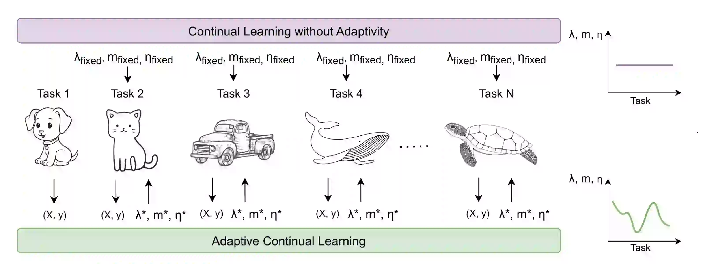

News
- 06/2024, I have attended an amazing summer school on Generative Modelling "GeMMS" at TU Eindhoven.
- 11/2023, "Continual Learning with Dynamic Sparse Training: Exploring Algorithms for Effective Model Updates" has been accepted for oral presentation at the CPAL.
- 09/2023, "AdaCL: Adaptive Continual Learning" has been accepted for oral presentation at the CLAI.
- 04/2023, "Condition Monitoring and Predictive Maintenance in Railways" is granted to international patent.
- 10/2022, "Automated Machine Learning Approach in Material Discovery of Hole Selective Layers for Perovskite Solar Cells" has been published in the Energy Technology.
- 11/2021, "Predicting Perovskite Bandgap and Solar Cell Performance with Machine Learning" has been published in the Solar RRL.
- 05/2021, "A Machine Learning Approach for Metal Oxide Based Polymer Composites as Charge Selective Layers in Perovskite Solar Cells" published in the ChemPlusChem.
- 08/2020, "Comparison of Machine Learning Models on Performance of Single- and Dual-Type Electrochromic Devices" has been published in the ACS Omega.
|
Research

FOCIL: Finetune-and-Freeze for Online Class-Incremental Learning by Training Randomly Pruned Sparse Experts.
Murat Onur Yildirim, Elif Ceren Gok Yildirim, Decebal Constantin Mocanu, Joaquin Vanschoren.
ArXiv, 2024.
paper -
github -
blog

AdaCL: Adaptive Continual Learning.
Elif Ceren Gok Yildirim, Murat Onur Yildirim, Mert Kilickaya, Joaquin Vanschoren.
ContinualAI, 2024.
paper -
github -
blog
Continual Learning with Dynamic Sparse Training: Exploring Algorithms for Effective Model Updates.
Murat Onur Yildirim, Elif Ceren Gok Yildirim, Ghada Sokar, Decebal Constantin Mocanu, Joaquin Vanschoren.
CPAL, 2024.
paper -
github
Automated Machine Learning in Material Discovery of Hole Selective Layers for Perovskite Solar Cells.
Murat Onur Yildirim, Elif Ceren Gok Yildirim, Esin Eren, Peng Huang, Muhammed Haris, Samrana Kazim, Joaquin Vanschoren, Aysegul Uygun Oksuz, Shahzada Ahmad.
Energy Technology, 2023.
paper
Predicting Perovskite Bandgap and Solar Cell Performance with Machine Learning.
Elif Ceren Gok, Murat Onur Yildirim, Muhammed Haris, Esin Eren, Meenakshi Pegu, Naveen Harindu Hemasiri, Peng Huang, Samrana Kazim, Aysegul Uygun Oksuz, Shahzada Ahmad.
Solar RRL, 2022.
paper
A Machine Learning Approach for Metal Oxide Based Polymer Composites as Charge Selective Layers in Perovskite Solar Cells.
Murat Onur Yildirim, Elif Ceren Gok, Naveen Harindu Hemasiri, Esin Eren, Samrana Kazim, Aysegul Uygun Oksuz, Shahzada Ahmad.
ChemPlusChem, 2021.
paper
Comparison of Machine Learning Models on Performance of Single-and Dual-Type Electrochromic Devices.
Elif Ceren Gok, Murat Onur Yildirim, Esin Eren, Aysegul Uygun Oksuz.
ACS Omega, 2020.
paper
See more
|
Portfolio

Witchcraft and Wizardry: Generative AI.
Introduction, VAEs, ARMs, Normalizing Flows, Diffusions, and GANs.
read -
watch -
github

Less is More: Sparse AI.
Introduction, Model Sparsity, Data Sparsity, and Label Sparsity.
read -
watch -
github
North Remembers: Continual AI.
Introduction, Regularization, Replay, and Architecture Approaches.
read -
watch -
github
|
|